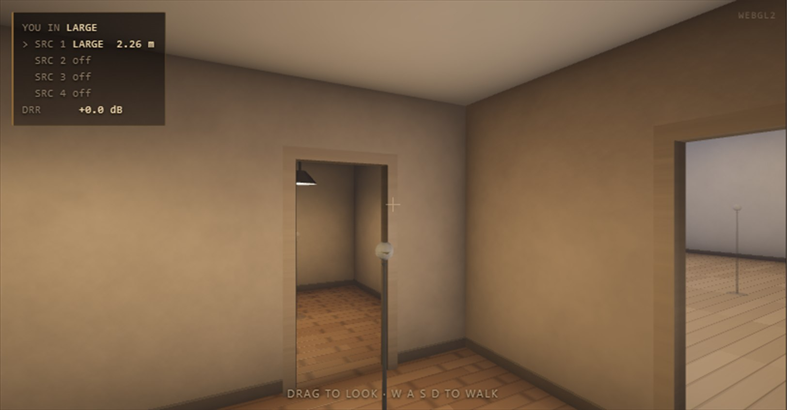

An apartment of three rooms and three doors. You place up to four sound
sources in it, you stand in it yourself, and what comes out is what your
two ears would pick up from where you are standing and which way you are
facing. Every arrival is a journey the engine has actually traced: the
straight line, the bounces off the walls, the path that bends round a door
frame, the muffled fraction that gets through a shut leaf or a party wall,
and the tail each room builds for itself. Walk around it while it plays.
Five surface treatments, chosen separately for the walls, the floor and
the ceiling of each room. Two walls of every room can be broken at a
movable point and splayed outward. And every door has a handle you can
take hold of and swing.
A reverb asks you how much room you want. A room does not: it gives you
exactly as much as the distance, the absorption and the doors say it
should. Thin Walls calibrates the reverberant level to what the physics
of a diffuse field demands, so the direct-to-reverberant ratio
— the strongest cue your ears have for distance — comes out
right by construction. Walk twice as far away and it falls by 6 dB. At
the critical distance it reads within 3.5 dB of zero for every material
in the flat.
What you get instead of an amount is a place to stand. Close, far,
through a doorway and behind a shut door are four different sounds, and
they differ in character — timing, colour, direction
— not merely in level.
Three trims — DIRECT, EARLY and REVERB — are there anyway,
defaulting to 0 dB, for when you want to lie about it on purpose.
The flat
Three shoeboxes, every pair joined by a door — so every
“behind that one” case exists, including the two-door route
through the third room.
a hinge side
A door is a strip
Opening one 30 % uncovers a real 27 cm gap beside the frame, not a uniformly thinner wall. The leaf swings into the room it is hung in, and you can watch it.
an open door absorbs
A room changes size
Sound that leaves through a doorway does not come back. The box room in bare plaster rings for 1.32 s at 1 kHz shut, and 0.58 s with both its doors wide open.
nine surfaces
Walls you can change
Absorbing, furnished, plaster, tiled or studio — chosen separately for the walls, the floor and the ceiling of each room, from published octave-band absorption. The hall in tiles rings for five and a half seconds at 1 kHz.
What you hear behind a door
Three different ways in, and they do not sound alike. This is
the part the name is about.
Open. Outside the open strip the path bends at the
nearest edge and pays Maekawa's diffraction, which costs the top end
far more than the bottom — 6 dB more at 4 kHz than the clear
line. The sound is localised at the doorway, as it is in a real
flat.Shut. A light leaf loses 14 dB at 125 Hz and 32 dB at
8 kHz; the party wall, 30 to 53 dB. Shutting the door drops 1 kHz by
20 dB and darkens what is left. It still radiates from the point
nearest the straight line, so it comes from the right direction.
A door part open sits between the two, continuously. Nothing crossfades a
shut sound into an open one — the opening is a real strip of a real
width, and the diffraction, the leaf and the room's own absorption all
follow from it.
The room is yours to change
Not a size knob and a decay knob — the surfaces and
the shape, with the reverberation time falling out of them.
A material per surface. Between a source on the
floor and a listener on the floor, the first two reflections to
arrive are the floor's and the ceiling's. A carpet is the most
lopsided absorber in a normal room — almost nothing below
250 Hz, a great deal above 2 kHz — so floor = ABSORBING
is a real tuning control, and ceiling = ABSORBING is the cloud
every control room has over the desk. Both default to AS WALLS, so a
room you never touch is the room it always was.Breakable walls. The two walls of each room that
carry no doorway can be split at a movable point and that point
pushed out, so the room stops being rectangular. Drag the diamond in
the plan. A centred source in a square hard room measures
2.4 dB uneven across 300 Hz–1.2 kHz and 2.0 dB
with both walls broken; push a wall 0.6 m out and the room's own
decay goes from 1.766 s to 1.801 s, because the room really is
bigger.
Push the break OUTWARD. Pulling it inward makes the wall concave,
which focuses sound at a point and is worse than leaving it flat. Real
studios splay outward. And be clear about what it does here: the splay
acts on the early reflections, not on standing waves — this
model's late field is statistical rather than modal. Above the Schroeder
frequency, about 72 Hz in the hall as a studio, that is where splay does
its audible work in a real room too. Below it, absorption is what helps.
STUDIO, the fifth material
Its absorption was not guessed: it was solved backwards from Eyring's
formula for a decay that does not move with frequency, and what
comes out is roughly constant absorption near a quarter with a little
relief at the top to pay for air absorption — which is what
broadband absorbers plus bass traps physically are. The hall as a studio
measures 0.71 s at 250 Hz, 1 kHz and 4 kHz alike, a spread of
1.00×, where the same room tiled spreads 3.09×. The living
room: 0.39 / 0.40 / 0.41 s.
Its treatment is diffusion, not absorption. Reflections keep their
energy and lose the specular direction, so the room stays live while the
flutter goes: the specular reflections carry 18 % of what a
plastered room's carry, and the rest is scattered into the room rather
than taken out of it.
And the doors have handles
In the 3D view, walk up to a door — within 2.5 m, in front of you,
not through a wall — and its handle lights up under the pointer.
Click to slam it or throw it open; drag to swing it. Meanwhile
W A S D and the arrow keys always win: they walk
and turn even when a menu or a fader has the focus, so you can set a
material and then simply walk.
Four sources, two kinds, two input buses
Each source has its own place, height, facing, type, level and input.
LOUDSPEAKER — a two-way monitor: a 6.5″
woofer below 2.2 kHz and a 1″ tweeter above, nearly
omnidirectional at 125 Hz and about 22 dB down straight behind it at
4 kHz. Turn one away and it loses 21.5 dB at 4 kHz but only 5.5 dB at
250 Hz.

PURE — a point source on a stand, from
omnidirectional to cardioid at every frequency. Narrowing it removes
radiated power, so a cardioid excites the room 4.8 dB less than an
omni: point it away and the room gets brighter relative to it, not
darker.
MAIN and AUX
Every source takes one channel, or both, from either of two stereo input
buses. MAIN is the track the plugin is on — feed MAIN L and
MAIN R to two loudspeakers and you have a stereo pair standing in a room.
AUX is a second input bus, the sidechain in most hosts:
route another track into it and a second instrument plays in a different
room of the same flat. A source set to OFF is silent, costs nothing, and
stays in the views as a ghost so you can place it before you use it.
And because walking around a room is not something you can do with one
hand on a transport bar, the plugin will loop a file of your own into the
input while you do it — in the VST3 and in the standalone alike.
What the bench proves
90 checks, all clear, beside 73 that drive the panel. The
bench renders real audio and measures it; these are its numbers.
−708 µs
interaural delay at 90°, against Woodworth's 666
0.1 dB
how far the direct path sits from the physics, 10 Hz to 16 kHz, wherever a source stands
15 of 15
room and material cases matching Eyring's reverberation time
5.6–6.6 dB
spectral roughness of the tail, against the 5.57 dB of a perfectly diffuse field
1.00×
how far a studio-treated hall's decay moves across 250 Hz, 1 kHz and 4 kHz; tiled, it spreads 3.09×
−23 dB
at 1 kHz from shutting a door — and 4 kHz loses 12 dB more than 250 Hz
31 dB
down through the party wall and a shut door, against the same distance in your own room
0.09 dB
how far the general path search lands from the exact shoebox on a wall broken by 2 mm
The head is the MIT KEMAR compact measurement set — 368
directions, diffuse-field equalised, converted to minimum phase with a
separate onset delay and resampled to your host's rate. Air absorption is
ISO 9613-1, diffraction is Maekawa, absorption coefficients are from the
standard tables. Delays are read with a 16-tap windowed sinc, so a source
may stand anywhere without losing the top octave. None of it was tuned by
ear afterwards.
Copy the whole Thin Walls.vst3 folder into
C:\Program Files\Common Files\VST3 and rescan. The standalone
needs no installing.
Specifications
Format
Windows VST3 (64-bit), plus a standalone application
Type
Effect — stereo in, stereo out, plus a second stereo input bus (“Aux In”, the host's sidechain)
Rooms
Three: 6×5×2.8 m, 3×3.5×2.5 m and 12×9×5 m, joined by three 0.90 m doors. Two walls of each can be broken and pushed ±0.6 m
Materials
Five — absorbing, furnished, plaster, tiled, studio — chosen per surface: walls, floor and ceiling of each room
Sources
Four, each a modelled two-way loudspeaker or a point source, each with its own input
Reflections
Image sources to second order; a general surface-sequence search once a wall is broken, validated against the exact arithmetic to 0.09 dB
Reverberation
One 16-line feedback delay network per room, allpass diffusers inside every line, per-band decay from Eyring, coupled through the doors and walls
Delay reader
16-tap windowed sinc; the direct path holds to a tenth of a decibel from 10 Hz to 16 kHz
Head
MIT KEMAR compact set, 368 directions, resampled at prepare; EAR SPACING 15 to 100 cm
Parameters
65, all automatable — including every source position, every surface, every broken wall and your own position
CPU
One source about 17 % of a core at 48 kHz; four with every door open, 40 %
Sample rates
Any. Bench-tested at 44.1 and 96 kHz.
Hosts
Any VST3 host — developed against Ableton Live 12
Price
Free. No account, no registration, no telemetry.
Honest limits, also in the handbook: where the rooms are and which doors
join them cannot change; reflections are specular (only STUDIO scatters)
and stop at the second order; breaking a wall moves the early reflections
rather than the room's standing waves; and two sources in one room share
that room's field — correct, but the share each hands it is taken
at 1 kHz rather than per band.